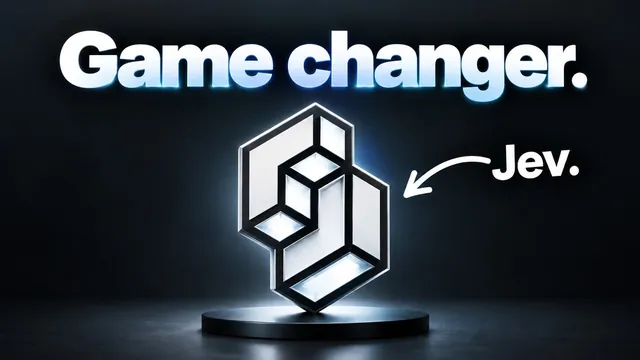

Jev를 실전 12가지로 써봤다 — 솔직한 후기

원본 영상 보기 →
- "결정 전용" 모델이라는 좁은 역할이 오히려 강점이다
- 대량·반복 판단 업무일수록 비용 격차가 기하급수적으로 벌어진다
- 속도·비용이 좋아졌다고 그대로 신뢰하면 안 된다
한 줄 요약
"글을 쓰지 않고 오직 예/아니오·분류·점수 같은 결정만 내리는" 신형 AI 모델 Jev를 이메일 분류부터 실시간 트레이딩 봇까지 12가지 실전 사례로 테스트해본 영상으로, 대량 반복 판단 업무에서 기존 모델 대비 압도적인 속도·비용 우위를 데이터로 보여준다.
전체 내용 정리
Jev는 "결정만 내리는" AI다
Jev는 대화하거나 글을 쓰는 모델이 아니라 오직 결정(decision)만 출력하는 AI다. ChatGPT를 공동 발명한 Dogo가 지난 2년간 개발한 RLCD(reinforcement learning for calibrated decisions, 보정된 결정을 위한 강화학습) 방식으로 학습시켰고, Typesafe AI 블로그를 통해 공개됐다. 현재는 Typesafe AI에서 대기 명단에 등록해야 하지만, Versel의 게이트웨이나 OpenRouter를 통해서도 바로 사용할 수 있다. Jev가 내리는 결정은 세 종류뿐이다: 예/아니오에 확신도를 붙이는 "new", 여러 카테고리 중 하나를 고르는 "choice", 0~10 같은 척도로 매기는 "score". 개발사는 기존 모델 대비 20~200배 빠르고 40~400배 저렴하며, 출력 토큰 자체가 무료라고 밝혔다.
결정 전용이기 때문에 생기는 한계와 적합한 사용처
Jev는 글쓰기, 요약, 주제 도출, 심층 분석을 하지 못한다. 오직 정해진 질문에 대한 결정만 내놓는다. 입력 컨텍스트 창도 6만 4000토큰으로, 백만 토큰 수준인 Claude나 GPT 계열 모델보다 훨씬 작다. 그래서 적합한 사용처는 명확하다. 수천 건 단위의 데이터를 분류·판단해야 하거나, 프로덕션에서 대규모 결정 기반 워크플로를 돌리거나, 실시간으로 빠른 판단이 필요한 경우다. 반대로 몇 건 안 되는 항목을 살펴보거나, 이유를 설명해야 하거나, 브레인스토밍이나 대화가 필요하다면 여전히 ChatGPT 같은 일반 모델을 써야 한다. 예를 들어 유튜브 댓글 5000개가 있다면 Jev로 먼저 저렴하게 "답장 필요/방치/구매 의사"로 분류한 뒤, 그중 필요한 댓글만 더 똑똑한 모델에 넘겨 답변을 작성하게 하는 식의 역할 분담이 이상적이다.
이메일·유튜브 댓글·커뮤니티 게시물 분류로 속도와 비용을 직접 비교하다
가장 먼저 이메일 1000건을 대상으로 영수증/청구서 여부, 브랜드 제안 여부, 스팸·피싱 여부, 이메일 유형, 긴급도, 스폰서 적합도까지 7가지 기준을 동시에 분류했다. 처음엔 병렬 처리 없이 70초·9센트가 걸렸지만, 백엔드를 병렬 처리로 바꾸자 같은 작업이 6초·9센트로 끝났다. 같은 작업을 GPT 5.6 Luna로 돌리자 5분·62센트가 걸려, 속도로는 약 46배, 비용으로는 약 12배 차이가 났다. 세부적으로는 "영수증/청구서인가"라는 단일 질문만 돌렸을 때 1000건 전체를 4초·5센트에 처리했고, 237건이 "예"로 분류됐다. 유튜브 댓글 1000개도 댓글 유형·답장 필요 여부·영상 아이디어 여부·감정·질문 난이도 기준으로 5초·5센트 만에 분류를 마쳤고, Jev 콘솔을 확인하니 누적 약 2만 건의 요청을 돌리고도 총 비용이 85센트에 불과했다. 커뮤니티(스쿨) 게시물에도 같은 방식을 적용해 도움 필요 여부, 팀 답변 필요 여부, 이탈 위험, 멤버 숙련도, 후기 강도 등을 분류할 수 있음을 보여줬다.
실시간 자동화: X 피드 크롬 확장, 회의록 분석, 영상 클립 평가
속도가 실제로 체감되는 사례로 X(트위터) 피드를 실시간 분류하는 크롬 확장 프로그램을 직접 만들어 시연했다. 화면에 새 게시물이 뜨는 즉시 Jev가 백엔드에서 이를 "속보", "골든 너겟", "AI 슬롭(질 낮은 콘텐츠)"으로 즉시 라벨링해 피드를 스크롤하면서 무엇을 읽고 무엇을 무시할지 바로 파악할 수 있게 해준다. 같은 원리를 회의록에도 적용할 수 있다. Fireflies나 Granola로 회의가 텍스트화되는 즉시 통화 유형, 결정 사항 유무, 액션 아이템 유무 등을 분류해두면, 예를 들어 "다음 단계가 명확한 담당자·기한 없이 끝난 회의가 유독 많다"는 패턴을 데이터로 발견해 회의 진행 방식을 바꾸는 근거로 쓸 수 있다. Jev 자체는 "이 회의들의 공통 문제가 뭔지 말해줘" 같은 분석을 하지 못하지만, 질문을 전략적으로 설계해 수치와 카테고리를 쌓으면 그 데이터로 스스로 결론을 도출할 수 있다는 것이 핵심이다. 영상 클립 평가에도 적용해, 독립적으로 게시 가능한지, 후킹 강도가 어느 정도인지, 인용할 만한 대사가 있는지를 클립 단위로 채점해 재활용할 클립을 골라내는 데도 썼다.
실시간 페이퍼 트레이딩 봇과 그 밖의 활용 아이디어
매초 단위로 비트코인이 오를지 내릴지 판단해 실시간으로 매매를 실행하는 페이퍼 트레이딩(모의투자) 봇도 만들어봤다. 아직 검증되지 않은 실험 단계이고, 실제로는 거래 수수료가 Jev의 판단 비용보다 더 커서 수익성을 따지기 어려운 상태였다. 다만 이 워크플로를 24시간 돌리는 데 드는 순수 판단 비용은 하루 약 2달러 수준으로, 같은 작업을 Soul·Opus·Fable 같은 모델로 돌렸다면 훨씬 비쌌을 것이라고 밝혔다. 이 밖에도 계약서를 받는 즉시 위험 유형과 조항 종류를 분류하는 계약 검토, 리드나 채용 지원서의 레드플래그·품질·다음 단계를 판단하는 스크리닝, 아이디어·할 일·일기 등으로 자동 분류하는 "브레인덤프 라우터", 감정·긴급도·담당 부서를 판단해 라우팅하는 고객 지원 자동화까지 다양한 활용 아이디어를 제시했다. 특히 고객 지원 자동화를 "가장 파급력이 클 사례"로 꼽았는데, 결정해야 할 항목이 많고 그 각각이 Jev가 가장 잘하는 영역이기 때문이다.
도입 전 반드시 평가(eval)부터 하라
영상은 "Jev가 뭐라고 하든 그냥 믿지 말라"고 명확히 경고한다. 실제로 도입하기 전에는 정답이 확인된 100개짜리 골든 데이터셋을 만들고, 그 100개를 Jev·Opus·Soul 등 여러 모델에 동일하게 돌려서 어떤 모델이 정확도와 비용의 균형이 가장 좋은지 비교해야 한다고 강조했다. 속도가 중요한 사례라면 속도까지 함께 비교 기준에 넣어야 한다.
핵심 인사이트
- "결정 전용" 모델이라는 좁은 역할이 오히려 강점이다: 글쓰기·요약·분석을 포기한 대신 예/아니오·분류·점수라는 세 가지 결정에만 특화해 속도와 비용을 극단적으로 끌어올렸다. 모든 작업을 하나의 범용 모델에 맡기는 대신, "판단은 저렴한 전용 모델, 응답·분석은 똑똑한 모델"로 역할을 나누는 구조가 앞으로의 AI 자동화 설계 방식을 바꿀 수 있다.
- 대량·반복 판단 업무일수록 비용 격차가 기하급수적으로 벌어진다: 이메일 1000건 처리 비교에서 속도는 최대 46배, 비용은 12배 이상 차이가 났고, 요청 2만 건을 누적해도 총비용이 1달러가 안 됐다. 처리량이 적을 때는 체감이 안 되지만, 실제 자동화가 하루에도 수천 건씩 돌아간다면 이 격차가 곧 운영비 절감으로 직결된다.
- 속도·비용이 좋아졌다고 그대로 신뢰하면 안 된다: 영상은 정답이 확인된 데이터셋으로 검증(eval)하기 전까지는 Jev의 판단을 곧이곧대로 쓰지 말라고 거듭 강조한다. 저렴하고 빠른 도구일수록 도입 전 검증 절차를 건너뛰기 쉬운데, 바로 그 지점에서 품질 문제가 조용히 쌓인다.
오늘 당장 해볼 것
- 우리 업무에서 매번 반복적으로 "예/아니오·카테고리·점수" 판단을 내리고 있는 지점을 3곳 적어보기 (예: 들어오는 이메일 분류, 문의 라우팅, 리드 등급 매기기, 계약서 위험도 체크 등)
- 거래하는 자동화 업체나 개발자에게 "지금 쓰는 자동화가 대량 분류·판단 구간에서도 매번 일반 대화형 모델(ChatGPT·Claude 등)을 통째로 쓰고 있는지, 저비용 결정 전용 모델로 그 구간만 분리해 비용을 줄일 수 있는지" 문의해보기
- 자동화 도입 전에 "정답이 확인된 샘플 100건으로 미리 검증했는지"를 업체에게 반드시 물어보고, 검증 없이 바로 실전 적용하겠다는 제안은 보류하기